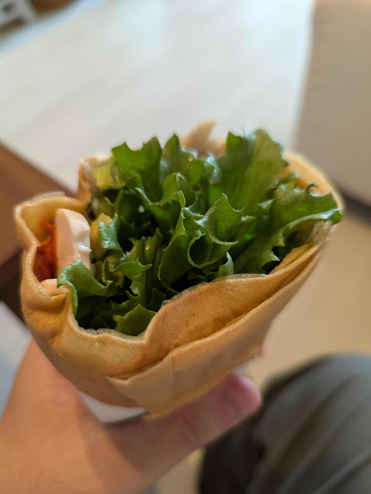
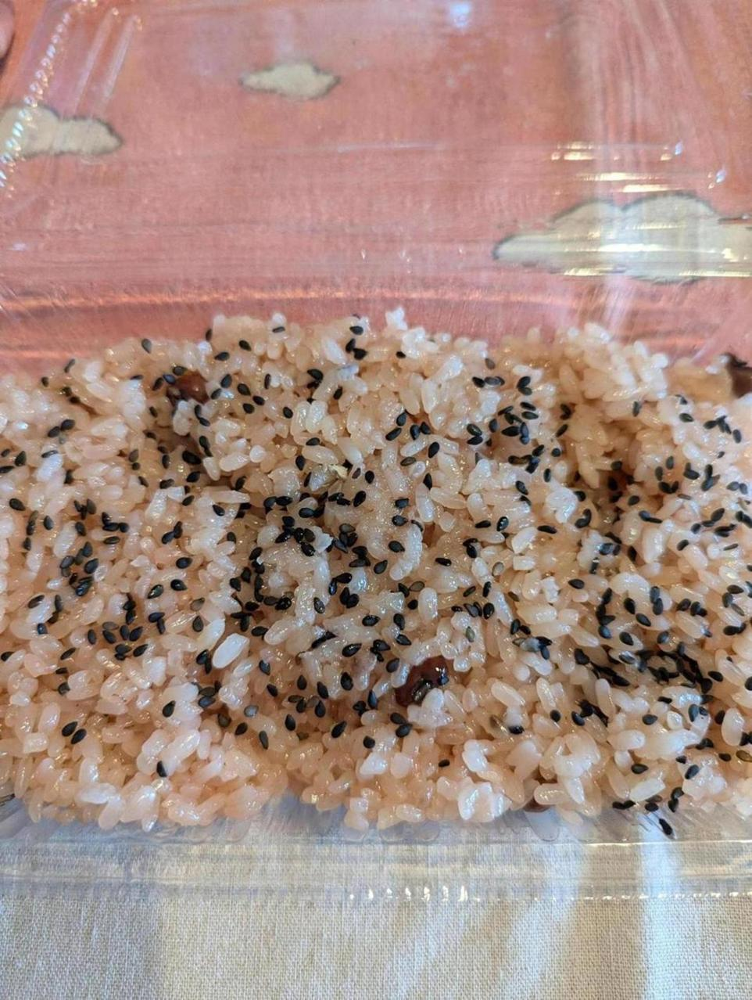
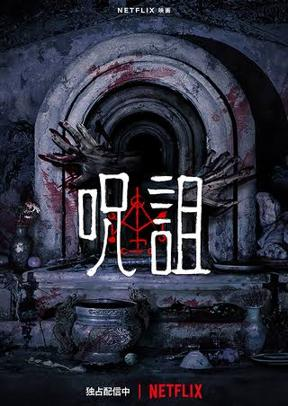

おかずクレープ。初めて食べた。 おかずクレープ、うまいはうまいんだけど、やっぱ違うかもなと思った。やっぱチョコとかバナナのほうがうまい。おかずクレープはうまいけど、この系統でうまいものはもっとある。戦う場所が適切じゃない感じがする。

赤飯も食べた。 赤飯が好きだ。なんかおはぎとか売ってる店に赤飯が売ってると買ってしまうことがある。 北海道の赤飯を食べたことがある。北海道の赤飯は豆がなんか甘い（煮豆みたいなやつ）し、赤みは食紅でつけているらしい。私はあんまり好きじゃないけど、北海道では市民権を得ているらしい。

ネットフリックスで「呪詛」を見た。 かなりオーソドックスなホラーだ。ちゃんと怖い。呪いもので、いわゆる「お憑かれさま」系というやつだが、ストーリーが凝ってる感じはしない。色々設定はあるかもしれないけど、純粋に怖さを楽しめばいい映画だなと感じた。オススメです。